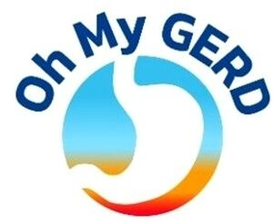

Trade Mark Journal No.2025/026 27 June 2025
WO0000001859356 (5)
Office of origin: United States of America

The mark consists of the stylized wording "Oh My GERD" arranged in an arc above a stylized teardrop or droplet shape. The droplet shape features a gradient color transition. Color Claim: The mark consists of the colors dark blue, light blue, yellow, and red. Specifically: 1. The text "Oh My GERD" appears in a dark blue color. 2. The upper portion of the droplet shape is light blue.3. The droplet transitions through shades of yellow to red at its base. Font: The text "Oh My GERD" is in a sans-serif font, with rounded, bold lettering. The font appears to be custom or heavily modified, so we should specify it as a "stylized font" rather than naming a specific typeface. Design Elements: 1. Curved text arrangement: The words "Oh My GERD" follow a curved path, arching over the droplet symbol. 2. Stylized droplet: A teardrop or droplet shape with a gradient color effect forms the central element of the logo. Size and Proportion: The text "Oh My GERD" spans the full width of the design, with the droplet symbol centered below and occupying approximately 2/3 of the vertical space of the entire mark. Color Description of the Gradient Pattern: The stylized stomach shape features a smooth gradient transition from top to bottom, reminiscent of a partial rainbow or spectrum effect. Specifically: 1. The top portion starts with a light blue color. 2. It transitions through shades of light blue to a pale yellow in the middle section. 3. The bottom portion transitions from the pale yellow through orange to a vibrant red at the base. Stomach Shape Description: The central element of the logo is a stylized representation of a stomach: 1. The overall shape is similar to a sideways teardrop or a rounded, irregular oval. 2. The left side (which would be the top of the stomach) is more rounded and full. 3. The right side (representing the bottom of the stomach) tapers to a more pointed end, suggesting the connection to the small intestine. 4. The shape is simplified and smoothed, without detailed anatomical features, to create a clean, iconic representation. This stylized stomach shape serves as both a visual representation of the digestive system (relevant to the "GERD" in the text) and as a colorful, eye-catching design element that complements the curved text above it.
The mark contains the colours dark blue, light blue, yellow, and red.
The droplet shape features a gradient color transition. Color Claim: The mark consists of the colors dark blue, light blue, yellow, and red. Specifically: 1. The text "Oh My GERD" appears in a dark blue color. 2. The upper portion of the droplet shape is light blue.3. The droplet transitions through shades of yellow to red at its base. Color Description of the Gradient Pattern: The stylized stomach shape features a smooth gradient transition from top to bottom, reminiscent of a partial rainbow or spectrum effect. Specifically: 1. The top portion starts with a light blue color. 2. It transitions through shades of light blue to a pale yellow in the middle section. 3. The bottom portion transitions from the pale yellow through orange to a vibrant red at the base.
- Class 5
- Dietary and nutritional supplements for the aid and relief of esophageal issues; dietary supplements for the aid and relief of esophageal issues; dietary supplements in the form of powder; natural dietary supplements for the treatment of esophageal issues.
Dr. Ryan's, LLC
Representative: Christopher Nichols McBee, Moore, & Vanik IL Law, 10 S. Market Street,, 2nd Floor, Frederick MD 21701, UNITED STATES OF AMERICA